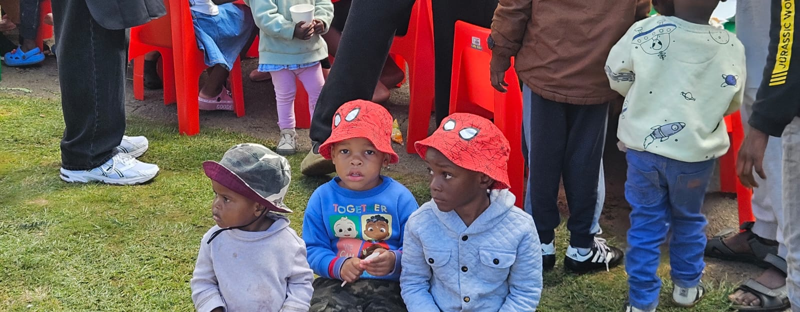

A SATURDAY SCHEDULE
From preparation to fellowship.
Preparation Begins.
We begin preparing pastries, food, drinks and everything needed for the morning's outreach.
A little prayer.
Every Saturday has to start with prayer to give gratitude to our Lord for this privilege we've been given.
Families, Men, Women, children all com together and lineServing begins.
Families, children and members of the community gather together as meals and pastries are shared with love.
WAYS TO CONNECT
houseofphilia@gmail.com
082 791 3148
068 112 4454
 SATURDAY OUTREACH
Every Saturday is an opportunity to serve, fellowship and build community together.
09:45 — Preparation begins. 10:45 — Community serving begins. 11:45 – 12:00 — Outreach concludes. THANK YOU
Thank you for taking the time to learn about our community.
We pray that every act of kindness, generosity and love points people back to Christ.
We hope to see you soon.
There are many ways to reach us.

Email Us

Call Us

WhatsApp
Join us on Saturday mornings.
Thank you for visiting House of Philia.
“Let all that you do be done in love.”
1 Corinthians 16:14